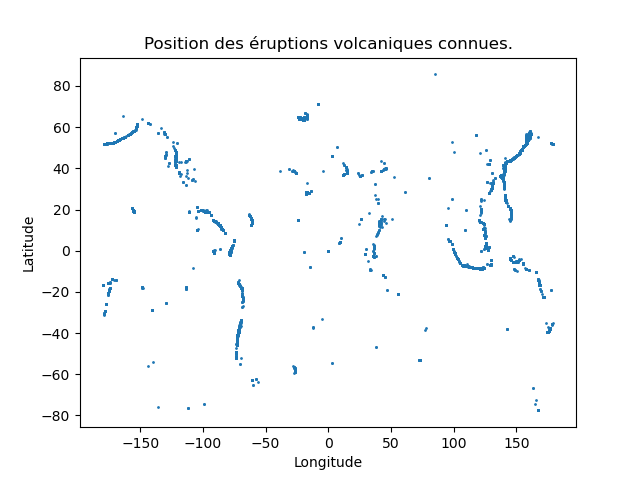
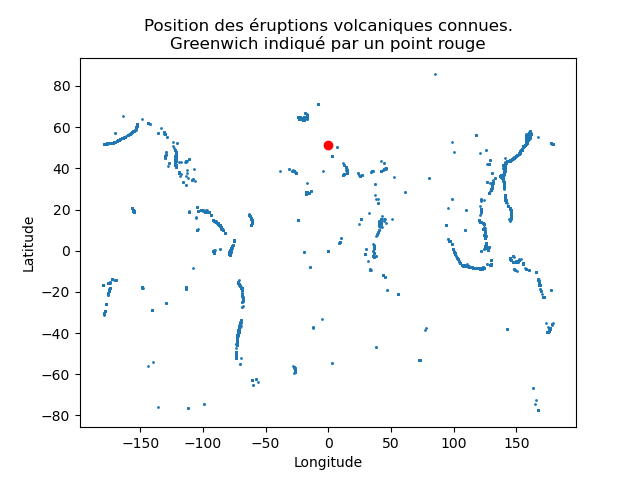
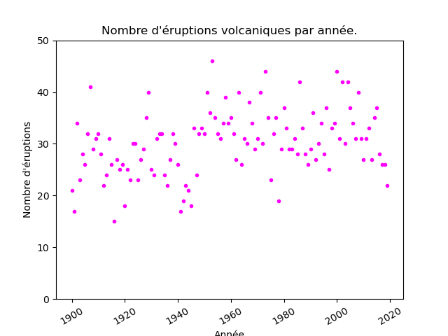

Contrôle 1
Science des données 2
L3 MIASHS, 16 octobre 2023
Tout document autorisé
Durée : 1h45
Ce contrôle s'appuie sur le travail réalisé depuis le début du semestre.
La difficulté des questions va de très facile à moins facile. Seules les toutes dernières questions sont un peu plus compliquées, mais largement faisables pour quiconque a réalisé les TPs jusqu'à maintenant.
L'énoncé est ci-dessous. Vous répondez dans ce document que vous m'envoyez au format pdf au plus tard à 15h45 (horaire strict). Vous m'envoyez également un fichier contenant le code python à exécuter pour résoudre les questions. Je dois pouvoir exécuter ce script sans erreur. Vous pouvez m'envoyer plusieurs emails successifs. Dans ce cas, seul le dernier (envoyé avant 15h45) sera pris en compte.
Énoncé
Nous allons étudier un jeu de données qui contient de nombreuses éruptions volcaniques connues s'étant déroulées dans les 14000 dernières années. Les données sont ordonnées de l'éruption la plus récente à la plus ancienne.
Ce fichier est disponible à l'url https://philippe-preux.github.io/ensg/miashs/datasets/eok.csv.
Pour chaque éruption, le jeu de données indique :
- le numéro du volcan concerné ;
- le nom du volcan ;
- le numéro d'éruption ;
- le type d'éruption ;
- la zone d'activité du volcan ;
- l'indice d'explositivité de l'éruption (Volcanic explosivity index) ;
- la date de début d'éruption ;
- la méthode utilisée pour dater l'éruption ;
- la date de fin de l'éruption ;
- la latitude du volcan ;
- la longitude du volcan ;
- le pays où est situé le volcan.
Les questions :
- quelle commande effectuez-vous pour charger le jeu de données ? Faites-le et indiquez-la dans le compte-rendu.
- Quelle commande effectuez-vous pour connaître le nombre de données contenues dans ce jeu de données ? Indiquez ce nombre dans le compte-rendu.
- Quelle commande effectuez-vous pour connaître le nombre d'attributs décrivant les données ? Indiquez ce nombre dans le compte-rendu.
- Quelle commande effectuez-vous pour obtenir la liste de ces attributs ? Indiquez cette liste dans le compte-rendu.
- Quelle commande effectuez-vous pour obtenir l'année où a eu lieu l'éruption la plus ancienne enregistrée dans ce jeu de données ? Indiquez cette année dans le compte-rendu.
- Quelle commande effectuez-vous pour obtenir le pays dans lequel a eu lieu cette éruption ? Indiquez ce pays dans le compte-rendu.
- Quelle commande effectuez-vous pour connaître le nombre d'éruptions qui ont eu lieu dans chaque pays ? Indiquez-la dans le compte-rendu.
- Quelle commande effectuez-vous pour connaître le pays qui a enregistré le plus grand nombre d'éruptions ? Indiquez le pays et le nombre d'éruptions dans le compte-rendu.
- Quelle commande effectuez-vous pour connaître le nombre d'éruptions qui se sont déroulées en France ? Indiquez ce nombre d'éruptions dans le compte-rendu.
- Quelle(s) commande(s) effectuez-vous pour connaître les années de la plus ancienne et la plus récente éruptions qui se sont déroulées en France ? Indiquez ces deux années dans le compte-rendu.
- La célèbre éruption du Vésuve qui a detruit Pompeï est-elle dans le jeu de données ? Elle a eu lieu en 79 et en anglais, le volcan s'appelle "Vesuvius". Quelle commande tapez-vous pour répondre à cette question ? Si l'éruption est présente, indiquez le numéro de la donnée correspondante (le numéro de la ligne dans le jeu de données).
- Quelle commande effectuez-vous pour obtenir le nombre d'éruptions volcaniques dans le monde depuis 2000 ? Indiquez ce nombre dans le compte-rendu.
- Quelle commande effectuez-vous pour réaliser un graphique de la répartition des éruptions dans le monde (en fonction de la longitude et de la latitutde du volcan), autrement dit, cette figure :

Insérez la figure que vous avez réalisée dans le compte-rendu.
Comment faites-vous pour ajouter un point rouge indiquant la position de Greenwich (longitude = 0, latitude = 51°28'44") ? Faites-le.

Insérez cette autre figure dans le compte-rendu.
- Les attributs start_year, start_month, start_day indiquent la date de début de l'éruption. Les attributs end_year, end_month, end_day indiquent la date de fin.
Ajouter un attribut duration au jeu de données qui contient la durée de l'éruption. Quelle commande tapez-vous pour réaliser cela ?
- Pour que vous ne soyez pas bloqué pour la suite, si vous ne savez pas résoudre la question précédente, vous pouvez charger le fichier qui contient cet attribut à l'url https://philippe-preux.github.io/ensg/miashs/datasets/eok+duration.csv.
Quelle commande effectuez-vous pour connaître la plus longue éruption connue de l'histoire ? Où s'est-elle déroulée ? Est-elle terminée ? Combien de temps a-t-elle duré ? Vous indiquez la réponse à ces questions dans le compte-rendu.
- Au graphique précédent, ajouter la position de ce volcan en orange. Insérer cette nouvelle figure dans votre compte-rendu ;
- Pour quel volcan a-t-on le plus d'éruptions connues ? Dans quel pays est-il situé ? Combien y en a-t-il ? De quand date la plus ancienne ?
- Combien d'éruptions dans la "Chaine des Puys" (utilisez ce nom pour le volcan) sont connues ? Quelle est l'année de la plus récente ?
- Combien y a-t-il d'éruptions en moyenne chaque année depuis 1900 ? Faire un graphique de ce nombre au fil des années, de 1900 à 2020 comme celui-ci :

Insérez-le dans le compte-rendu.
- Faire le même graphique pour les années comprises entre 0 et maintenant. Insérez-le dans le compte-rendu. Que constatez-vous ? Pensez-vous que cela reflète la réalité ?